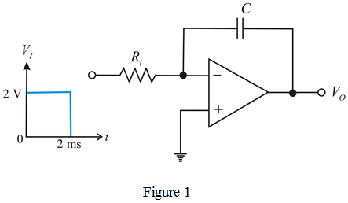
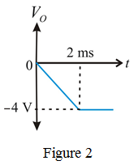

Miller integrator input resistance
Frequency is
The gain of the miller integrator is unity.
Substitute for  , and
, and  for
for  in the equation.
in the equation.
Therefore, the value of capacitor,  is .
is .
The miller integrator circuit with applied input voltage of 2 V, 2 ms pulse is shown in Figure 1.

Miller integrator input resistance
Frequency is
The gain of the miller integrator is unity.
Substitute for , and for in the equation.
Therefore, the value of capacitor, is .
Calculate the output voltage.
Substitute  for
for  , and
, and  for
for  in the equation.
in the equation.
Therefore, the output voltage, miller integrator is  .
.
Write resistive and capacitive impedances in frequency domain.
And,
The input and output voltage is represented as and .
Apply Kirchhoff’s current law at inverting terminal of the op-amp.
The phase of transfer function is,
Substitute for  ,
,  for
for  , and
, and  for
for  in the equation.
in the equation.
Calculate the output voltage when a sine wave of is applied.
Substitute  for , and for in the equation.
for , and for in the equation.
Therefore, the output voltage,  miller integrator when sine input is applied is.
miller integrator when sine input is applied is.
The sketch of output waveform is shown in Figure 2.
